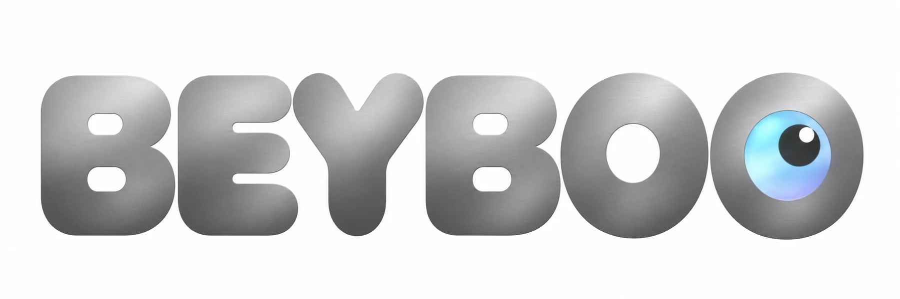

01
Align
Line up the screen with the socket.

HELLO, WE’RE BEYBOO.
A screen you can take with you.
A companion you can see yourself in.
A story to share.
Soft, still and ready for a hug.
Its screen brings the eye to life.
Discover the collection in development
BEYBOO IN EVERYDAY LIFE
A favorite video, a familiar voice or a puzzle you solve yourself. See six ways a child could spend time with BEYBOO.
BEYBOO ONE
Start with the screen on its own or choose your first plush companion. The round touchscreen is designed to clip into the companion’s face and lift out again.
Take your screen with you. Your companion will be waiting when you get back.
Screen clipped into Noah.

 BEYBOO One
BEYBOO OneThis animation illustrates the design. Prototype testing will confirm the fit, dimensions and compatibility.
A CLOSER LOOK
The module is designed for talking and listening, even on its own. Sound comes through the speaker grille. A separate opening on the rim houses the microphone.
Prototype testing will cover sound quality inside and outside the plush, protection for the openings, the attachment mechanism and the electronics.
HOW IT CLIPS IN
Your screen, in your favorite companion.
Follow the three steps from left to right.
Line up the screen with the socket.
Guide the module into the socket.
The eye is in place. Its world opens up.
THE COMPANIONS
Ten soft characters, with different skin tones, hairstyles and stories. Find one that reminds you of yourself or someone you love.
The video didn’t start. Open the video
NOAH’S LITTLE ADVENTURE
Noah has spotted his eye. Now he has to persuade the logo to give it back. Meet his mischievous side in this twelve-second film.
An animated short starring our mascot.
Izan, Sana, Rayan and Léa each come in two skin tones. Open a character’s profile to choose a look and read their story. Images are photorealistic concepts.
MILA · A QUIET MOMENT
A hug, a glance and a little pause in the day. Mila settles into her friend’s arms.
Concept film. The eye is animated on the screen.
The video didn’t start. Open the video
BEYBOO WORLD
Our companions are off to see the world. Twelve editions draw on local clothing, colors and settings. Each one has its own story.
These editions draw inspiration from local clothing. Tap an image for a closer look. The plush stays still as its round screen comes to life.
THE BEYBOO COLLECTION
Six presidents, a first lady and a queen. Tap a plush companion’s eye to hear its line.
Collectible caricatures with original BEYBOO lines and fictional AI-generated voices.
The portraits could not be loaded. Refresh the page to try again.
TAP. EXPLORE. SMILE.
The plush stays still. Touch the screen to play a game, watch a video or try a conversation.
TRY THE PLUSH AND ITS SCREEN LIVE

Screen magnifier The same activity, in a larger view.
Tap the eye to explore.
Tap a colour to try the glow.
Camera off · Face tracking runs on your device.
CAMERA · ON YOUR DEVICE
With your permission, the demo uses your phone or computer camera. Images and face detection stay on your device. The demo detects a face without identifying anyone or sending images to OpenAI. Your photo disappears when you leave camera mode unless you save it.
YOUR CONNECTED WORLD
Choose an activity and watch the eye change.
Imagine spending a day together.
FIND THEIR VOICE
Bright, mischievous or gentle. Listen to a sample and pick your favorite.
A bright little voice with a smile in every word.
Listen to a short sample with your microphone off.
Twelve voice styles use ten distinct AI-generated voices. Samples use this demo’s API credits.
Try “open maths”, “video about the Moon” or “weather in Paris”.
Dictation may send your voice to your browser’s speech service.Tap the eye to open its apps, the microphone to talk. The plush stays still.
YOUR TURN
The pupil follows your gesture and the colors change when you touch the screen. Choose an expression.
Ready to chat?
You can also tap an action to try it.
Try “Show me a video,” then “Pause it.”
This trial uses an AI-generated voice and your account’s API credits. Your audio goes to OpenAI during the three-minute session. The microphone turns off when you stop or leave the page. The site does not store audio recordings.
Check my OpenAI API credits ↗Sign in to the site ↗Choose a film from the selection, type a topic or paste a YouTube link.
Your words and BEYBOO’s replies will appear here. The transcript may contain errors.
Ready to say hello?
The link opens BEYBOO and asks for the family code, so only your family can join the call. It stops working when you hang up.
Calls go directly between your devices; BEYBOO only relays the connection setup. Your phone or computer camera and microphone are used with your permission; without a camera the call switches to audio only. These calls use no OpenAI credits.
In this demo: Try AI conversations, videos, games, math, stories and music. Photos use your device’s camera, and video calls connect family devices directly.
For the future product: Hardware, battery life and Android integration are still in development. The web app currently supports neither Play Store downloads nor native WhatsApp calls.
ALYA · THE JOY OF LEARNING
A child chooses 12. The screen confirms the answer and shows the next question. Learning starts with a tap.
An illustration of a feature in development. The plush stays still.
The video didn’t start. Open the video
BEYBOO ACCESSORIES
Headphones for a favorite story. A watch to keep in touch. A stand for your screen. Picture BEYBOO in your daily routine.
Accessory concepts. Connected features and compatibility are in development.
SMALL THINGS FROM THE BEYBOO WORLD
A tiny companion on your bag. Your favorite character on your water bottle. Take that familiar eye with you throughout the day.
Everyday essentials with details to collect.
The eye on these accessories is decorative.
Everyday pieces inspired by BEYBOO. These collectibles have decorative eyes. Prices are per item in euros. The collection is in development.
A BEYBOO FOR EVERYONE
At home, at work and across generations. Ten imagined scenes show how our companions could fit into your day.
The video didn’t start. Open the video
AARON · STAYING IN TOUCH
A grandson waves and Grandma smiles back from Aaron’s screen. A little moment together, even from far away.
A staged call illustrating a connected feature in development.
Concept campaign images. The plush companions stay still. Only the images on their screens are designed to move.
YOUR BEYBOO, YOUR WAY
Start with the screen. Choose your plush now or later, then add the accessories you like.

One eye and its first companion.

ROUND DISPLAYS IN USE TODAY
MINI developed its round display with Samsung Display. It inspired our idea for a round touchscreen that can show far more than an eye.
BEYBOO’s size, detachable mounting, heat management and battery life still need to be developed with a manufacturer. The automotive module cannot be fitted directly into a plush.
Official MINI × Samsung Display presentation ↗An independent technology reference. BEYBOO has announced no partnership with MINI or Samsung Display.
FROM THE STUDIO
A visual study imagining a future Sonic collaboration. The idea pairs a familiar character and a round eye with the softness of a plush.
CREATIVE PROPOSALUnofficial concept. No partnership has been announced, and the design is not for sale.
YOUR QUESTIONS
The plush stays still. Its body, head, arms and mouth have no motors. Only the images on the screen move. The screen clips in and lifts out by hand.
Their eyes are decorative. The electronics concept covers the BEYBOO One screen and accessories specifically described as connected.
The collection is designed so you can choose BEYBOO One on its own, pair it with a plush or add companions and accessories separately. You can already save a selection in the configurator. Sales have yet to open.
The round module is designed to clip into a socket in the companion’s face. The animation shows the intended movement. Prototypes will be used to test the attachment, its durability and how it can be used safely.
Yes. Noah follows trails in search of stories, Alya makes paper gardens, and Sana collects quiet moments. Open a companion’s profile to read their story and get to know them.
Play three touch games, listen to five free instrumentals, watch an original animated clip, explore stories or try talking to BEYBOO with OpenAI. Voice requires available API credits and microphone permission. You can also type a question. Video calls connect two devices of the same family directly (WebRTC): one relative signed in with the family code calls, the other accepts in the eye, or shares an invitation link. Camera and microphone access is requested when the call starts. BEYBOO only relays the connection setup; a TURN server may be needed on some networks. WhatsApp calling is outside this demo. The AI assistant can control on-screen activities. Watch a selected YouTube video or paste a video link. A broader search offers up to five videos from a selection of child-friendly channels. Some videos and browsers require a tap to start playback. The plush hardware is still in development.
These photorealistic concept images show the materials, characters and accessories we have in mind. Prototype photos and confirmed specifications will replace them as development progresses.
AARON · TIME TOGETHER
A grandmother and her grandson share a discovery. An adventure begins on Aaron’s screen, and the two take it from there.
Concept film. The action takes place on the plush companion’s screen.
The video didn’t start. Open the video